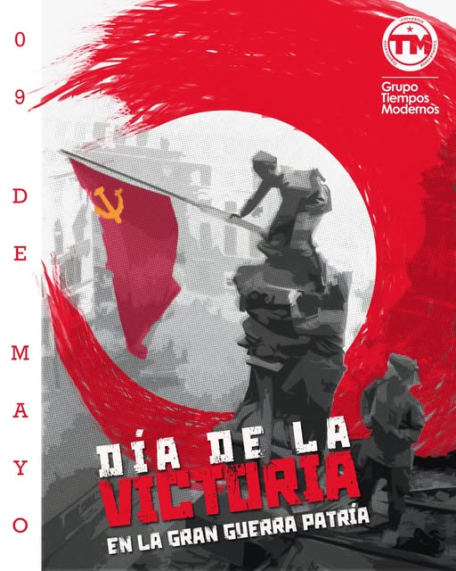

Editorial
Grupo Tiempos Modernos
13-05-2025
El fin de la Segunda Guerra Mundial y la caída del fascismo son incomprensibles sin el titánico y decisivo heroismo del pueblo soviético. Al contrario de lo que la inmensa operación mediática y académica del imperialismo nos ha intentado vender, el fascismo fue derrotado en el Frente Oriental por los esfuerzos de la Unión Soviética hasta llegar a la toma de Berlín. Esta invisibilización no sólo es el más descarado de los revisionismos históricos de los que el mundo tenga memoria, es también el producto de una estrategia que hasta nuestros días ha intentado convertir en héroes a los verdaderos herederos de fascismo de la primera mitad del siglo XX.
En un mundo donde las clases trabajadoras y populares son cada vez más golpeadas por las nuevas políticas imperiales, donde los ideólogos del fascismo vuelven a tomar protagonismo con el contubernio de las "democracias occidentales", es indispensable recuperar y defender nuestra memoria de lucha y victoria. Nuestra dignidad y personalidad histórica está en disputa en la gran narrativa en contra de los pueblos que resisten, luchan y vencen a los verdaderos enemigos de la humanidad y sus cómplices del agazapado liberalismo y la izquierda parlamentaria y académica que condena sin ninguna disposición a la acción que trascienda la demagogia.
Hoy como ayer, los llamados infértiles a la paz no son otra cosa que la complicidad estructural con el capital y el imperialismo. Las democracias capitalistas han fracasado rotundamente como proyecto civilizatorio y sólo los pueblos organizados y en lucha podrán vencer al fascismo que hoy se despliega en las políticas estadunidenses, sionistas y del capitalismo occidental. No habrá paz sin combate al fascismo y hoy como ayer venceremos retomando el heroico ejemplo del pueblo soviético, la mayor empresa de organización, sacrificio y disposición al combate que haya demostrado jamás el género humano, resultado histórico de una verdadera revolución social.
